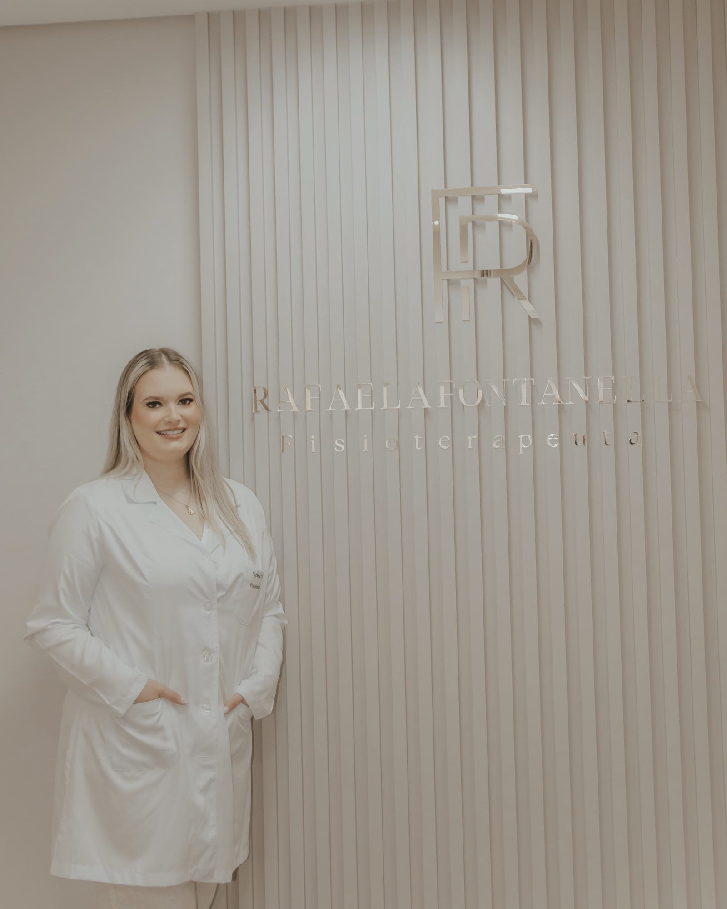
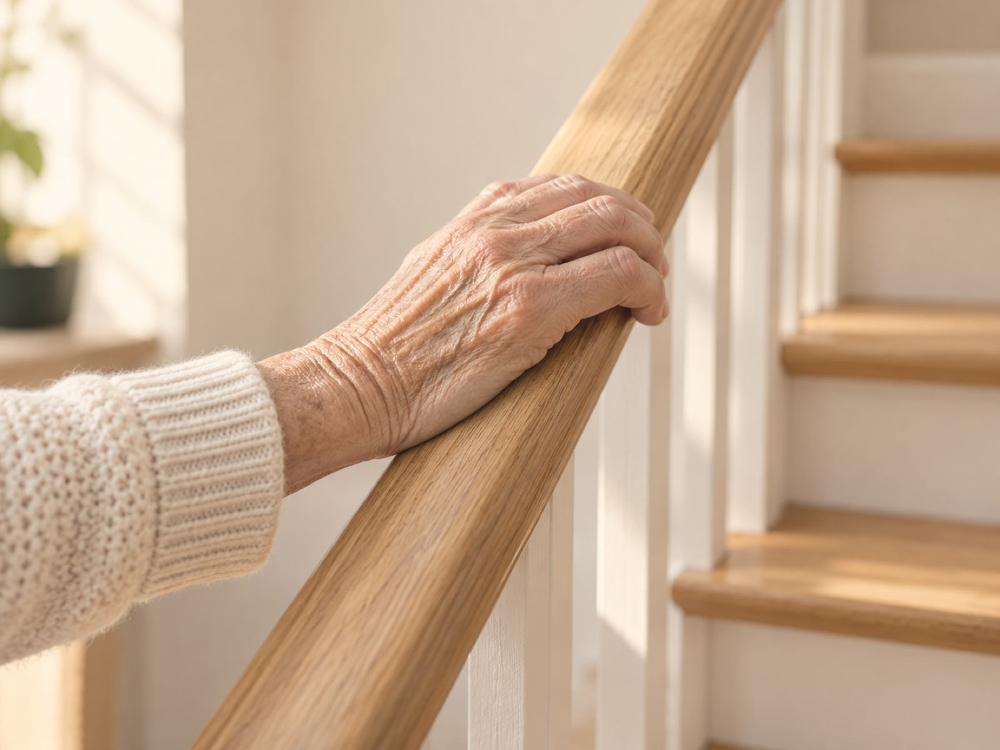
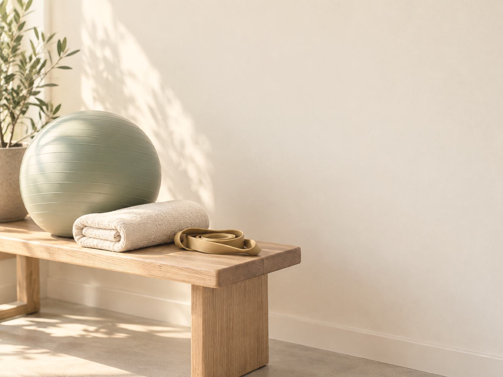
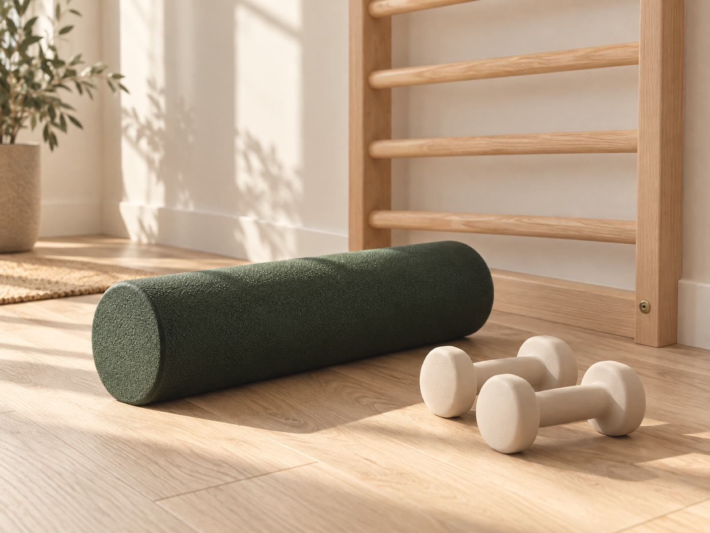
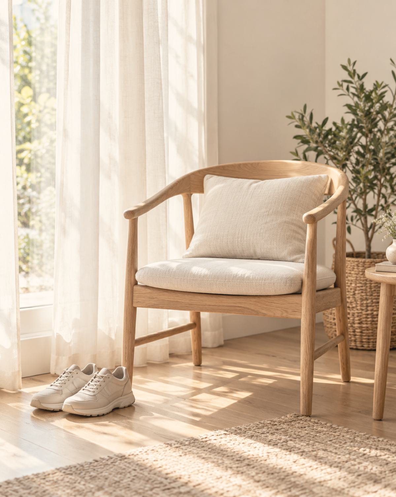
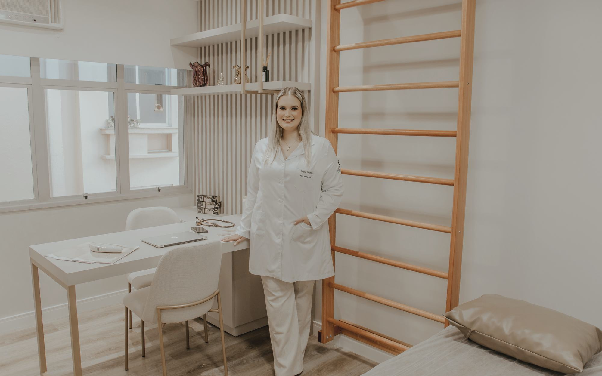
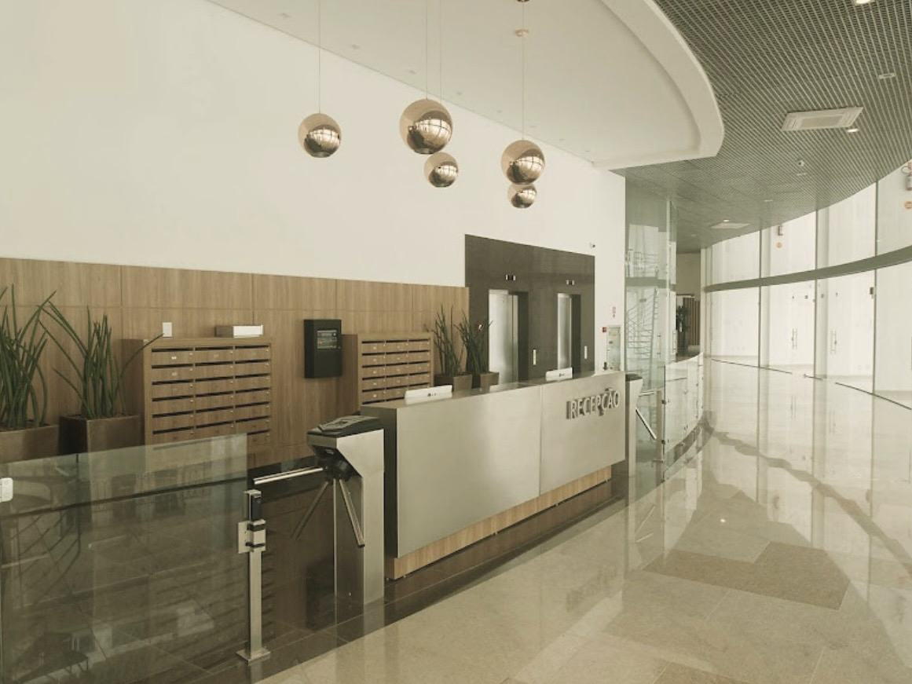

Fisioterapeuta · Centro de Florianópolis
Equilíbrio se treina, com paciência.

Fisioterapia para pessoas idosas e para adultos com dor nas articulações. Cada exercício pensado para as atividades do dia a dia.
Fisioterapeuta Rafaela Fontanella · CREFITO-10/372549-F
- Mobilidade
- Equilíbrio
- Força
- Autonomia
5,0 no Google19 avaliações · out. 2026
CREFITO-10/372549-FConsultório registrado RC002514
8h às 19hSegunda a sexta
Centro · FlorianópolisLife Medical Tower · sala 501
Sobre
Quem está diante de mim
Sou a Rafaela Fontanella, fisioterapeuta com registro no CREFITO-10 (372549-F). Atendo no meu consultório, na sala 501 do Life Medical Tower, no Centro de Florianópolis.
Boa parte dos meus pacientes são pessoas idosas. Trabalho força e equilíbrio com atenção às atividades do dia a dia e à segurança de cada movimento.
Para mim, a fisioterapia também é feita de vínculo e escuta. Gosto de conhecer a pessoa e tudo o que ela já viveu.
FisioterapeutaCREFITO-10/372549-F
Sala própria
Atendimento cuidadoso e dedicado, num consultório registrado no CREFITO-10.
Exercício com motivo
Cada exercício está ligado a um gesto da sua rotina, como pegar algo no alto do armário.
Sempre se atualizando
Estudo contínuo, em busca de uma prática baseada em evidências.
Atendimento
Como posso ajudar
Três frentes do meu trabalho no consultório. Em todas, você começa por uma avaliação.
-

-

-


Situações comuns
O que costuma trazer pacientes
Situações que levam pessoas, ou os filhos delas, a procurar fisioterapia.
- Medo de cair
- Desequilíbrio ao caminhar
- Pernas sem força
- Dificuldade para levantar da cadeira
- Insegurança na escada
- Rigidez ao acordar
- Articulações doloridas
- Doença reumática
- Dor no quadril
- Pouca firmeza para girar o corpo
- Tornozelo travado
- Movimentos instáveis
- Dificuldade para alcançar objetos
- Passos curtos e arrastados
- Pouco movimento depois de uma internação
- Receio de sair sozinho na rua
Não encontrou a sua situação? Conte pelo WhatsApp.
Contar o que sentePrimeira vez
Como funciona
Do primeiro contato às sessões, em quatro etapas.
Mensagem no WhatsApp
Você escreve, conta o que está acontecendo e combinamos o horário.
Avaliação
Na primeira consulta, vejo com atenção como você se movimenta e conversamos sobre a sua rotina.
Plano de sessões
Você sai sabendo o que vamos trabalhar e por quê.
Acompanhamento
A cada sessão, os exercícios acompanham a sua evolução.
Cuidar também é estar presente.
Endereço
Av. Trompowsky, 291
Torre 1, sala 501
Life Medical Tower, CentroAgendamento
Pelo WhatsApp (48) 99681-1828.
O consultório
Um lugar agradável para se movimentar
Sala clara, com espaldar de madeira e maca, dentro do Life Medical Tower.

Onde fica
Life Medical Tower, Torre 1
Centro · Florianópolis/SC
88015-300
Entrada, banheiro e estacionamento acessíveis para cadeira de rodas.
Segunda a sexta, das 8h às 19h.

Dúvidas
Antes de agendar
Preciso de pedido médico?
Para conversar e agendar, não. Se você tiver pedido médico, exames ou relatório de cirurgia, traga na avaliação.
Posso agendar para o meu pai ou a minha mãe?
Pode. Escreva contando a situação dele ou dela. Se quiser, venha junto na primeira consulta.
Quanto custa? Atende convênio?
Valores e formas de pagamento são combinados pelo WhatsApp, antes da primeira consulta. Pergunte também sobre convênio e reembolso.
Quantas sessões vou precisar?
Depende do que a avaliação mostrar. A frequência é combinada com você e revista durante o acompanhamento.
Que roupa usar?
Roupa confortável, que deixe você se movimentar, e um calçado firme.
E se for difícil andar até lá?
O prédio é acessível para cadeira de rodas. Avise na mensagem e combinamos a chegada.
Agendar
Comece pela avaliação
Uma mensagem pelo WhatsApp para combinar o horário da primeira consulta.
Agendar avaliaçãoCentro · Life Medical Tower · CREFITO-10/372549-F
Tem uma pergunta?